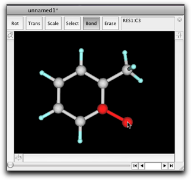
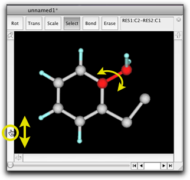
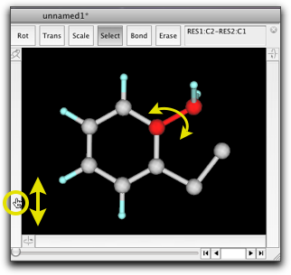
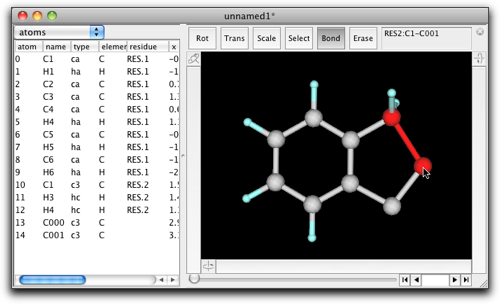
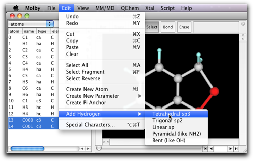
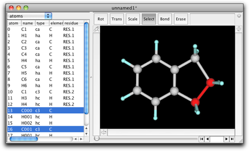

Step Two: Edit a Molecule
1. Append a Substituent
Suppose you have a benzene molecule now, and want to append a methyl substituent to give a toluene.
Press the button "Select", and click on the black area where no atom nor bond is present. The selection becomes canceled.

Select one of the hydrogen atoms. There are two ways to do this. You can click on the target atom, or you can drag to select atoms within a rectangular region.


Double-click on the hydrogen atom. This time, be sure to hit the selection! Then you will see the dialog "enter formula" as shown below. Type "CH3" in the text box and hit "OK".

Now you get toluene.

You want to save the result to a file. Select "Save as..." from the File menu, choose the file format, enter the filename, and hit "Save".
The "native" file format in Molby is "mbsf", i.e. Molby Structure File. The mbsf format is a private format with no compatibility with any existing file format for chemistry. Nevertheless, it is a plain text file that is reasonably compact and easy to read. Unless you have a particular reason to choose other formats, it is recommended that you save the structues as a "mbsf" file.
2. Manipulate Molecular Fragments
After building a molecule, you may want to move some part of a molecule. Here are examples how you can do it.
Select the methyl group of the toluene, if you have not done so yet (Tip: you can add to the current selection by shift-clicking). Press the left rotation bar (marked "3" in the previous page), and drag up and down. You will see the methyl group rotates to the right and left.

The same manipulation can be achieved by selecting one bond and dragging the left rotation bar. In this case, you can also rotate the benzene ring (with the methyl group fixed) by pressing Option (Mac) or Alt (Win) key when dragging.

The selected atoms can be dragged to give a translational move. Use this feature with care, because it may result in a chemically unnatural structure.

3. Adding and Deleting Atoms
We have already learned one way to add atoms: double-clicking on the selected part of the molecule (or on the black area where nothing is present), and type-in the formula. Actually, this is the most convenient way to add atoms in Molby. However, there are also other ways to add atoms.
Look at our familiar toluene molecule. Suppose we want to convert it to indane.
 indane
indane
Rotate the molecule so that its orientation matches the chemical structure. We will start from C3, add two carbons, and then close the ring.

Press the "Erase" button above the black area. Click on the "H3" hydrogen. The hydrogen atom and the bond between C3 and H3 disappear.

Press the "Bond" button. Drag from the C3 atom to the right-bottom, and release the mouse button. A new atom and a bond to C3 are created. Drag from the new atom to the right-up, and another atom and bond are created.
 
Press the "Erase" button again, and erase one hydrogen from the methyl group. Press the "Select" button, select the benzene-methylene bond, and rotate the methylene group as appropriate for the five-membered ring, by use of the left rotation bar.
 

Now you can close the ring. Press the "Bond" button, and drag from the methylene carbon. When the mouse cursor comes close enough to the target carbon, the new atom will snap to the target and make a new bond. Then release the mouse button.

Finally, you want to add hydrogens to the newly created carbons. Press the "Select" button, and select these two carbons. Go to the "Edit" menu, and select the "Add Hydrogen" -> "Tetrahedral sp3" menu command.

Here is the result.

A similar result can be achieved by selecting the hydrogen ortho to the methyl group, double-click it, type "CH2CH3" in, erase one hydrogen atom from each of the methyl groups, and make a bond. This is better because the newly created methylenes have reasonable bond lengths and angles as methylene groups. The above example is just for explanation of the editing features.